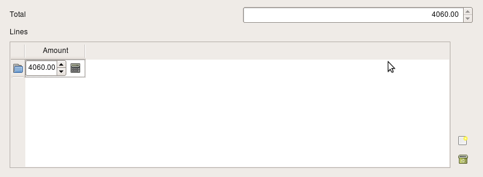

This section contains tips and tricks to build data models with Elixir/Sqlalchemy/Camelot. The reader is encouraged to first read the basics tutorial.
Having certain summary fields of your models filled by the database has the advantage that the heavy processing is moved from the client to the server. Moreover if the summary builds on information in related records, having the database build the summary reduces the need to transfer additional data from the database to the server.
To display fields in the table and the form view that are the result of a calculation done by the database, a ColumnProperty needs to be defined in the Elixir model. In this ColumnProperty, the sql query can be defined using sqlalchemy statements. Then use the field attributes mechanism to specify which delegate needs to be used to render the field.

As an example we will create a budget with multiple budget lines, where the total budget is calculated by the database :
from elixir.properties import ColumnProperty
from camelot.view.controls import delegates
from sqlalchemy import sql, and_
class Budget(Entity):
lines = OneToMany('BudgetLine')
total = ColumnProperty(lambda c:sql.select([sql.func.sum(BudgetLine.amount)], and_(BudgetLine.budget_id==Budget.id)))
class Admin(EntityAdmin):
name = 'Budgets'
list_display = [ 'total', 'lines']
field_attributes = {'total':{'delegate':delegates.FloatColumnDelegate}}
class BudgetLine(Entity):
budget = ManyToOne('Budget', required=True, ondelete='cascade', onupdate='cascade')
amount = Field(Float(precision=2), default=0)
class Admin(EntityAdmin):
name = 'Budget lines'
list_display = ['amount',]
When the user presses F9, all data in the application is refreshed from the database, and thus all fields are recalculated.
An explanation of the lambda function inside the ColumnProperty can be found in the Elixir api and the sqlalchemy documentation.